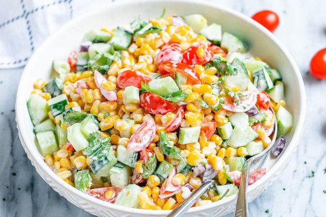

Summer Salad!

Description
This appealing creamy corn salad dish is the perfect meal for a hot summer day.
The creamy corn salad makes for a quick and easy meal filled with crisp corn kernels that pop
in a creamy yogurt sauce. If you are a fan of fresh, crisp salads with a healty and nourishing twist,
this is your dish. It is the perfect side dish for all of your summer BBQs.
Ingredients
Steps
- To make the creamy corn salad: Combine the corn, cherry tomatoes, red onion, cucumber, and cilatro in a large bowl. Season with pepper.
- In a separate bowl whisk together Greek yogurt, mayo, salt, pepper, and Italian seasoning. Gently stir into the corn mixture. Toss to combine the ingredients and coat with the sauce, then refrigerate the creamy corn salad until ready to serve. Enjoy!
Want to try some other recipes?
Return home